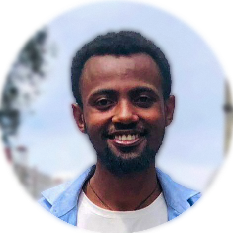

YARED AYSHESHIM

Architect
3D Modeling & Visualization Expert
Education
BSc in Architecture
2018-2022 | Addis Ababa University.
Summary
I've been transforming architectural concepts into designs
and realistic renderings for more than two years.
I can design elegant and immersive landscapes as well as
pleasant and functional interior layouts for whatever kind of
place you have in mind.
Key Skills
- 3D Modeling & Rendering
- Architectural Design
- Interior and Landscape Design
- Project Management
- Problem-Solving & Creativity
- Client Communication & Collaboration
Work Experience
Architectural Design | Birhanu Hailu Consultants
Feb.2023-Jan.2024 | Full-Time | Residential and Appartement Design and supervision, School Design
Landscape Design | Tariku Zemenu Construction Consultants
Apr.2023-Jun.2024 | Part-Time | Early Childhood Development (ECD) playground design for
Addis Ababa City Beatification and green development
Interior Design | Tariku Zemenu Construction Consultants
Jan.2023-current | Full-Time |Full Interior Design for school, appartements and offices
Notable Projects
- Modern Residence Design – Created a full design and rendering for a modern family residence in Addis Ababa.
- School Revamp Project – Collaborated with a team to redesign and improve the functionality and aesthetics of a local high school.
- Playground Design – Early Childhood Development (ECD) playground design for green area redevelopment project in Addis Ababa.
Software Proficiency
- Autodesk:
- Adobe:
- Photoshop
- Illustrator
- InDesign
- After Effect
- Rendering:
- D5 Render
- Corona
- Lumion
- Enscape
- Other 3D Modeling:
- SketchUp
- Rhino
- Grasshopper
- Blender
- Microsoft:
- Excel
- Clipchamp
- PowerPoint
- Word
Languages
- Amharic: Native
- English: Fluent
Contact Me | Hobbies